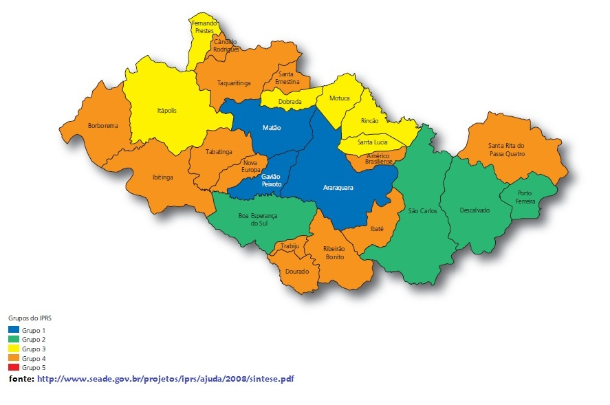

A cana-de-açúcar é conhecida por suas características peculiares: uma planta fina de formato cilíndrico, folhas grandes e pode alcançar até seis metros de altura.
É com ela que se faz dois produtos essenciais para a economia mundial: o açúcar, parte indispensável da alimentação humana, e o álcool, utilizado nas bebidas alcoólicas como a cachaça, o vinho e a cerveja, ou como combustível para abastecer os carros, também conhecido como etanol.
A altura que essa espécie atinge está diretamente ligada à quantidade de sol que ela recebe diariamente. Cultivados em locais de clima tropical ou sub-tropical, os pés de cana-de-açúcar são da mesma família de plantas como o milho, o arroz e a cevada. A cultura pode se desenvolver até em solos sem muitos recursos, como o cerrado. A cana produzida hoje é resultado de diversas melhorias genéticas feitas através do cruzamento de suas espécies.
Como o Brasil é o maior produtor de cana, muitos acreditam que se trata de uma cultura genuinamente nacional, mas não é verdade. A planta surgiu na ilha de Nova Guiné, no meio do oceano pacífico e se espalhou para o mundo gradualmente, junto com a migração humana. No Brasil a cana-de-açúcar só chegou em 1520, logo após os portugueses. Desde que chegou ao país no início do século XVI, junto com as primeiras caravelas, a cana-de-açúcar se tornou um dos mais importantes cultivos desenvolvidos no Brasil. Atualmente, o país ocupa o primeiro lugar no ranking de produção de açúcar e é o maior exportador de etanol do planeta. A recente busca por combustíveis renováveis que substituam o petróleo e não sejam tão agressivos ao meio ambiente faz da cana-de-açúcar um produto de importância global na procura por um desenvolvimento mais sustentável.